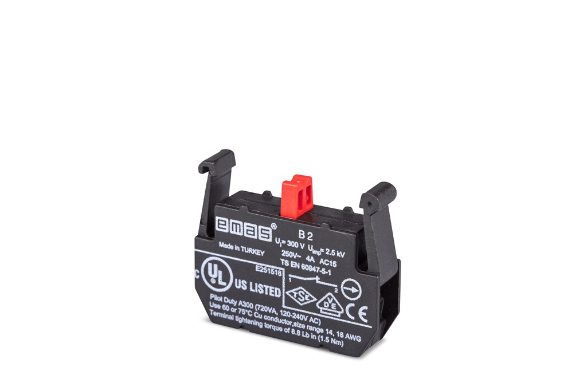

Cover Open / Close Buttons — Contact Difference
Botones Abrir / Cerrar Tapa — Diferencia de contactos
Please note: the contact blocks on the cover open and cover close push-buttons are not identical. Details and photos are below.
Atención: los bloques de contacto de los pulsadores Abrir tapa y Cerrar tapa no son idénticos. Detalles y fotografías a continuación.
1. Front panel · Panel frontal
Spanish labels for the left green and right close buttons · Etiquetas en español

2. Contact configuration · Configuración de contactos
Why this matters for wiring / PLC logic · Por qué es importante
Key point · Punto clave
There are 4 buttons related to cover open / cover close. On 3 of these 4 buttons, the contact blocks are arranged as: 1 red contact on the left (NC) and 1 green contact on the right (NO). However, the Cover Open (Abrir tapa) button on the upper-left of the label has a different setup: 2 green NO (Normally Open) contacts — no red NC contact.
Hay 4 botones relacionados con abrir / cerrar tapa. En 3 de estos 4 botones, los bloques de contacto están dispuestos así: 1 contacto rojo a la izquierda (NC) y 1 contacto verde a la derecha (NO). Sin embargo, el botón Abrir tapa (Cover Open) situado arriba a la izquierda de la etiqueta tiene una configuración distinta: 2 contactos verdes NO (Normalmente Abiertos) — sin contacto rojo NC.
- EN: 1 red (NC) left + 1 green (NO) right
- ES: 1 rojo (NC) izquierda + 1 verde (NO) derecha
- EN: 2 × green NO contacts (no red NC)
- ES: 2 × contactos verdes NO (sin NC rojo)
3. Photos · Fotografías
Rear view of the contact blocks · Vista trasera de los bloques de contacto
.jpeg)
ES: Rojo NC (izquierda) + Verde NO (derecha)
.jpeg)
ES: Par típico NC + NO en un botón

ES: Bloques cableados (disposición estándar)
.jpeg)
ES: Otro botón estándar NC (rojo) + NO (verde)
4. Requested action · Acción solicitada
Please try the following on site · Por favor pruebe lo siguiente in situ
⚠ Suggested test · Prueba sugerida
On the Kapak Aç / Cover Open (Abrir tapa) button, replace the contact that sits in the same position as the red contacts on the other buttons with a Normally Closed (NC) contact, then test the function again.
- Remove the green NO contact from that position (the side where the other buttons have the red NC).
- Install an NC (Normally Closed / closed contact) block instead — same type as the red ones on the other buttons.
- An equivalent NC contact from another compatible brand is also acceptable.
- Reconnect the wires and test Cover Open / Abrir tapa operation.
En el botón Kapak Aç / Abrir tapa (Cover Open), sustituya el contacto que está en la misma posición que los contactos rojos de los demás botones por un contacto Normalmente Cerrado (NC) y vuelva a probar la función.
- Retire el contacto verde NO de esa posición (el lado donde los otros botones tienen el NC rojo).
- Monte en su lugar un bloque NC (Normalmente Cerrado / contacto cerrado) — del mismo tipo que los rojos de los demás botones.
- También sirve un contacto NC equivalente de otra marca compatible.
- Vuelva a conectar los cables y pruebe el funcionamiento de Abrir tapa / Cover Open.

5. Summary · Resumen
The upper-left Abrir tapa / Cover Open button currently has two green NO contacts. The other three buttons use one red NC + one green NO. Please replace the mismatched side with an NC (closed) contact so it matches the others, then retest.
El botón superior izquierdo Abrir tapa / Cover Open tiene actualmente dos contactos verdes NO. Los otros tres usan un NC rojo + un NO verde. Sustituya el lado incorrecto por un contacto NC (cerrado) para igualarlo a los demás y vuelva a probar.